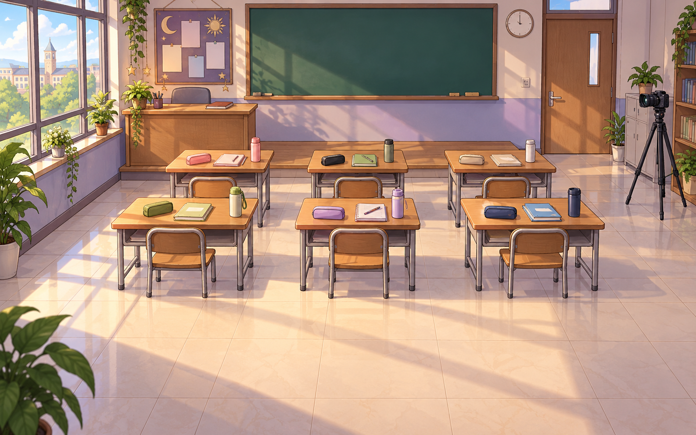

HỒ SƠ THỨ SÁU
Sĩ số +1
Năm người có mặt. Máy lại xuất sáu hồ sơ.

ĐIỂM DANH MÔ PHỎNG
Avatar là 6 hồ sơ để kiểm, không phải ảnh xác nhận 6 người có mặt.5 người ≠ 6 hồ sơ
Không âm thanh bất ngờ · Không thời gian đếm ngược
Năm người có mặt. Máy lại xuất sáu hồ sơ.
